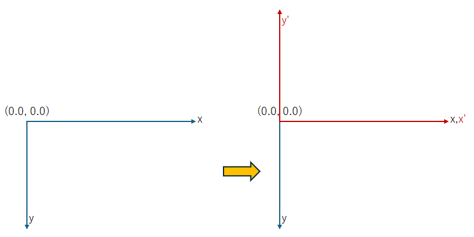

(update:2025/3/22)

座標軸を反転します。
Cairoでは、デフォルトの座標軸の向きはｘ軸は右向きを正、ｙ軸は下向きを正としています。グラフィック画面上にグラフを作成する場合など、ｙ軸を上下に反転させたい場合などは、scale()関数を実行することによって,座標軸の向きを反転させることができます。
scale(1.0, -1.0)を実行するとy軸の正負の向きが反転します。
また、scale( -1.0, 1.0 )を実行すると、x軸の正負の向きが反転します。なお、座標軸の正負を反転させた場合は、座標軸を平行移動(translate()関数)させておかないと描画する図形がグラフィック画面の描画エリアにおさまらなくなる場合があります。
| void Cairo::Context::scale( | double | sx, | // x軸方向の拡大係数 |
|---|---|---|---|
| double | sy ) | // y軸方向の拡大係数 |
#include <gtkmm.h>
class Drawing : public Gtk::DrawingArea {
public:
Drawing();
virtual ~Drawing() = default;
private:
double margin = 10.0;
double padding = 10.0;
Glib::ustring name_x ="x";
Glib::ustring name_y ="y";
protected:
void on_draw(const Cairo::RefPtr<Cairo::Context>& cr, int width, int height);
};
Drawing::Drawing()
{
set_draw_func( sigc::mem_fun( *this, &Drawing::on_draw));
}
void Drawing::on_draw(const Cairo::RefPtr<Cairo::Context>& cr, int width, int height) {
double x, y;
Cairo::TextExtents te_x, te_y;
// background
cr->set_source_rgba( 1.0, 1.0, 1.0, 1.0 );
cr->paint();
// 軸
cr->set_source_rgba( 0.0, 0.0, 0.0, 1.0 );
cr->select_font_face( "IPAゴシック", Cairo::ToyFontFace::Slant::NORMAL,
Cairo::ToyFontFace::Weight::NORMAL );
double resolution = get_pango_context()->get_resolution();
cr->set_font_size( 12.0*resolution/72.0 );
cr->move_to( 10.0, 10.0);
cr->get_text_extents( name_x, te_x );
cr->get_text_extents( name_y, te_y );
x = 10.0 - ( te_y.width/2.0 + te_y.x_bearing );
y = 20.0 - ( te_y.height/2.0 + te_y.y_bearing );
cr->move_to( x, y );
cr->show_text( name_y );
x = width - 20.0 - ( te_x.width/2.0 + te_x.x_bearing );
y = height - 10.0 - ( te_x.height/2.0 + te_x.y_bearing );
cr->move_to( x, y );
cr->show_text( name_x );
// Y軸を反転
cr->scale( 1.0, -1.0 );
// 平行移動
cr->translate( margin+padding, -height + (margin+padding));
cr->set_source_rgba( 0.0, 0.0, 0.0, 1.0 );
cr->set_line_width( 1.0 );
// x軸
cr->move_to( 0.0, 0.0 );
cr->line_to( width - 2.0*( margin + padding ), 0.0 );
cr->rel_move_to( -10.0, 3.0 );
cr->rel_line_to( 10.0, -3.0 );
cr->rel_line_to( -10.0, -3.0);
// y軸
cr->move_to( 0.0, 0.0 );
cr->rel_line_to( 0.0, height - 2.0*( margin + padding ));
cr->rel_move_to( -3.0, -10.0 );
cr->rel_line_to( 3.0, 10.0 );
cr->rel_line_to( 3.0, -10.0);
cr->stroke();
// function Y = 0.0001*X*(x-200)^2 + 10
cr->set_source_rgba( 0.0, 0.0, 1.0, 1.0 );
for( int i = 0; i < 280; i++ ) {
x = i;
y = 0.0001 * x * pow( x - 200.0, 2.0 ) + 10.0;
cr->arc( x, y, 1.0, 0.0, 2*M_PI );
cr->fill();
if ( y > height - 40.0 ) break;
}
}
class MyWindow : public Gtk::Window
{
public:
MyWindow();
protected:
Drawing my_draw;
};
MyWindow::MyWindow()
{
set_title( "scale reverse" );
set_default_size( 320, 240 );
set_child( my_draw );
}
int main(int argc, char* argv[]) {
auto app = Gtk::Application::create( "gtkmm4.example" );
return app->make_window_and_run<MyWindow>( argc, argv );
}